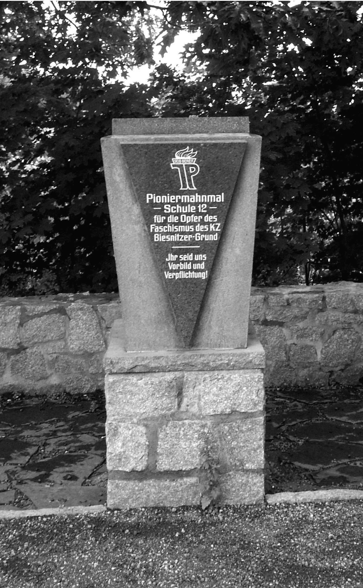
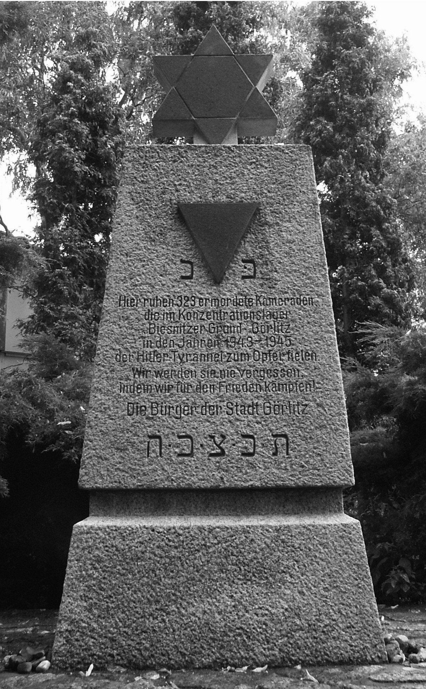

1 Gedenken und Erinnerung der Opfer
Gedenken heißt im Kontext dieses Buches, sich der menschlichen Opfer der KZ-Außenlager Görlitz und Rennersdorf zu erinnern und sich das ihnen zugefügte Leid zu vergegenwärtigen. Erinnerung setzt voraus, die Umstände und Ursachen des Geschehenen kritisch zu erfassen und im historischen Rahmen zu sehen, ohne diesen Gegenstand auf die Opfer- und Gefangenenzahl zu reduzieren. Auch dann, wenn kein Zeitzeuge mehr seine mahnende Stimme erheben kann, braucht es eine öffentliche Form der Erinnerung, um die Schuld und Schuldenlast im Gedächtnis zu bewahren und vor einer Wiederholung – ganz gleich wo auf dieser Welt – zu warnen.
Leider wurde die Historie der KZ-Außenlager in der Nachkriegszeit weder in Görlitz noch in Rennersdorf genügend aufgearbeitet, so dass dem Aufbau und der Pflege einer Erinnerungskultur teilweise die Grundlage fehlte. Um so wichtiger erscheint es, nach dem Fall des so genannten Eisernen Vorhangs und im Zeitalter einer zunehmend vernetzten Welt, die Erinnerungsarbeit voranzutreiben und sich dabei einer Vielzahl von Medien zu bedienen. Die bisher geleistete Arbeit wird hier, wenn auch nur ausschnitthaft, dargestellt. Die zukünftig zu entwickelnden Konzepte zur Etablierung einer angemessenen Gedenk- und Erinnerungskultur sollen in dieser Dokumentation lediglich angedeutet werden. Eine öffentliche Form des Gedenkens an die Opfer unter den Görlitzer KZ-Häftlingen gab es lange Zeit nur in Görlitz und Rennersdorf. In den Jahren 1985, 1986 und 1995 wurden auf dem Gelände der Gedenkstätte Groß-Rosen unter anderem drei Tafeln (Bild ) zur Erinnerung an die Nebenlager in Görlitz, Kunnerwitz und Rennersdorf angebracht. Letztere Gedenktafel weihte man im Beisein jugendlicher Vertreter der Rennersdorfer Kirchgemeinde sowie des Lehrers und Zeitzeugens Joachim Löwe am 6. Mai 1995 ein.
Anlässlich eines Gedenkmarsches zum 60. Jahrestag der Befreiung des KZ-Außenlagers Görlitz, gibt es nun auch in Deutsch-Paulsdorf eine Gedenktafel, die an die Opfer während des Todesmarsches erinnert.
Verschiedentlich findet sich in der Literatur auch der Vermerk über eine Gedenkstätte in Friedersdorf, wo vier Görlitzer Häftlinge beerdigt worden seien. Dabei handelt es sich jedoch um eine Verwechslung mit dem gleichnamigen Ort bei Neugersdorf, den gleichfalls 1945 ein Todesmarsch passierte1.
{kind=link}
Görlitz
In der Stadt Görlitz gibt es eine ganze Reihe von Gedenkstätten für die Opfer des Nationalsozialismus, davon zwei für das KZ-Außenlagers im Biesnitzer Grund. In unmittelbarer Nähe zum ehemaligen Lager, auf der Fröbelstraße (Bild ), befindet sich ein Gedenkstein, welchen Schüler der damaligen 12. Polytechnischen Oberschule (POS) unter Mithilfe von Lehrern, Mitgliedern des Elternbeirates und Werktätigen des Patentbetriebes Görlitzer Maschinenbau2 gemeinsam errichteten. Am 8. Mai 1959 wurde der Gedenkstein unter starker Anteilnahme der Görlitzer Bevölkerung eingeweiht. Der Stein wird von einer Opferschale abgeschlossen und steht innerhalb einer steinernen, halb runden Begrenzung. Die Inschrift auf dem Stein entspricht der damaligen politischen Intention: Pionierehrenmal Schule Nr. 12 / für die Opfer des / Faschismus des KZ / Biesnitzer Grund / Ihr seid uns Vorbild und Verpflichtung3. Es handelt sich nicht etwa um ein Mahnmal für die Pioniere der POS, sondern um eines von denselben. Im Jahre 2003 wurde der Gedenkstein unter Beibehaltung der Inschrift mit der irreführenden Ortsangabe KZ Biesnitzer Grundsaniert und an gleicher Stelle belassen, während innerhalb der Kleingartenanlage Biesnitzer Grund überhauptnichts an das Lager erinnert.
Einweihung des Gedenksteins auf dem Jüdischen Friedhof am 13. November 1951
Ein weiterer Gedenkstein (Bild ) befindet sich nur wenige hundert Meter entfernt, auf dem Jüdischen Friedhof an der Biesnitzer Straße. Ein Davidstern (Magen David) krönt den etwa zwei Meter hohen Stein. Auf der Vorderseite findet sich unter einem abgesetzten Winkel die deutsche Inschrift: Hier ruhen 323 ermordete Kameraden / die im Konzentrationslager / Biesnitzer Grund Görlitz / in den Jahren 1943 – 1945 der Hitler Tyrannei zum Opfer fielen / Wir werden sie nie vergessen / indem wir für den Frieden kämpfen! / Die Bürger der Stadt Görlitz. Die ehemals 148 auf dem städtischen Friedhof beigesetzten Urnen fanden 1948, nach einer Umbettung auf den Jüdischen Friedhof ihre letzte Ruhestätte. Die Zahl der Ermordeten ergibt sich wie folgt4:
111 Urnen von namentlich bekannten Häftlingen des KZ-Außenlager Görlitz;
19 Urnen aus dem KZ-Außenlager Hartmannsdorf (heute: Miloszow, Polen)
13 Urnen aus dem KZ-Außenlager Niesky5
4 Urnen aus dem Bautzner KZ-Außenlager6
173 namenlose Tote aus den Massengräbern auf dem Jüdischen Friedhof;
2 unbekannte Görlitzer Häftlinge, die (wahrscheinlich) in Rennersdorf starben;
Eine Urne eines sowjetischen Kriegsgefangenen, den man am 21. April 1945 in Görlitz exekutierte, soll ebenfalls auf dem Jüdischen Friedhof bestattet worden sein7. Demnach stehen nur 284 der 323 dort beigesetzen Häftlinge in Zusammenhang mit dem KZ Außenlager Görlitz. Zusammen mit den 36 Opfern anderer Lager ergibt sich die Zahl von 320 Toten, rechnet man den einen Kriegsgefangenen mit ein, bleibt immer noch eine Differenz von zwei. Die Antwort auf diese Frage findet sich aller Wahrscheinlichkeit nach in Rennersdorf.
148 Namen von Opfern sind der Friedhofsverwaltung jedenfalls seit 1948 bekannt. Aufgrund der Tatsache, dass alle 323 Leichname bzw. Urnen 1948 erneut in ein Massengrab anstatt in Einzelgräbern gebettet wurden, wirft die Frage auf, in welcher Weise man den zumeist jüdischen Opfern gedenken kann. Ein Nachfahre eines Opfers, der selbst die Shoa überlebte, musste jüngst selbst Hand anlegen (siehe Abb. 1.3), um für seinen Vater den Kaddisch8 sprechen zu können. Leider zeigt diese Art von memorial guerilla, wie überfällig es ist, einen angemessenen Rahmen für das Gedenken an die Opfer herzustellen. Derzeit engagieren sich einige Bürger für eine Neugestaltung der Grabzeichen.
{kind=link}


Die Jüdische Gemeinde Dresden wies die Stadtverwaltung Görlitz am 14. April 1948 auf den verwahrlosten Zustand des Friedhofs hin, worauf die Stadtverwaltung die Pflege und Betreuung der Friedhofsanlage übernahm und den erwähnten Gedenkstein errichtete. Im Beisein von ehemaligen Gefangenen des KZ-Außenlagers, Vertretern der Jüdischen Gemeinde Dresden und vielen Görlitzer Bürgern wurde der Gedenkstein am 13. November 1951 durch Oberbürgermeister Willi Ehrlich eingeweiht (siehe Bild ).
Rennersdorf
Gleich neben der Kirche, auf dem Ortsfriedhof, liegt eine kleine Grabanlage (Bild ), welche seit langem durch das Ehepaar Riehle gepflegt wird. Sie mahnt an die Ermordung von 10 jüdischen KZ-Häftlingen im März 1945 in Rennersdorf. Die Toten wurden erst 1950 auf dem Friedhof beigesetzt9. Der Gedenkstein aus Granit enthält den Davidstern gebildet mit dem Häftlingswinkel und flankiert mit hebräischen Buchstaben. Darunter ist zu lesen: Hier ruhen / 10 jüdische Männer / die von den SS-Horden / im März 1945 / ermordet wurden. Der Gedenkstein für die zehn namenlosen jüdischen Opfer wurde am 25. Juni 1950 auf dem Rennersdorfer Friedhof eingeweiht. Obwohl die Polizei in Rennersdorf 12 Leichen fand, sind aus unerklärlichen Gründen die Gebeine zweier Toter in Görlitz beerdigt worden. Verwunderlich ist gleichfalls die Existenz eines vermutlich älteren Grabsteins, auf dem in russischer Inschrift neun Juden erwähnt sind. Einmal jährlich gedachte man während der DDR-Zeit der Opfer des Nationalsozialismus mit einer Gedenkveranstaltung auf dem Rennersdorfer Friedhof. Bedauerlicherweise fanden sich an jenen Tagen kaum Dorfbewohner, sondern vielmehr Parteifunktionäre und auch Vertreter der Dresdner jüdischen Gemeinde ein. Die Reden waren zumeist ohne direkten Bezug auf die Vorkommnisse, von höheren Parteistellen vordefiniert10.
Anlässlich des bereits erwähnten Gedenkmarsches zum 60. Jahrestag der Befreiung stiftete die Gemeinde Berthelsdorf, deren Ortsteil Rennersdorf nun ist, eine Gedenktafel, welche die Marschstrecke der Gefangenen darstellt und dadurch den geschichtlichen Zusammenhang zwischen dem Grabstein und dem KZ-Außenlager Görlitz verdeutlicht. Diese Gedenktafel ist im Torbogen des Friedhofes angebracht und enthält die Inschrift: Zum Gedenken / Zur Mahnung / Im Frühjahr 1945 führte der Todesmarsch / jüdischer Häftlinge vom Görlitzer Konzentrationslager Biesnitzer Grund in unser Dorf. / Auf dieser Wegstrecke und während des Aufenthaltes / in Rennersdorf verstarben durch Entkräftung und / Gewalt der Nazidiktatur mindestens 45 von ihnen.
{kind=link}
1.1 Ausblick auf eine Erinnerungskultur ohne Steine
Die bisweilen erfolgte Aufarbeitung der Geschehnisse im KZ-Außenlager Görlitz und Rennersdorf bildet eine Grundlage für die Entwicklung einer lebendigen Erinnerungskultur im Dreiländereck Polen - Tschechien - Deutschland. Lebendig meint hier, das vorhandene Wissen durch Teilung zu mehren und angemessen zu vermitteln.
Derzeit lassen sich zwei Probleme für eine freie Geschichtsforschung und damit für eine aktive Erinnerungsarbeit am Gegenstand der Groß-Rosener KZ-Außenlager identifizieren:
Wichtige Primärquellen, wie Berichte von Überlebenden, sind in Archiven auf der ganzen Welt unter Verschluss, d.h. nur umständlich und mit hohem finanziellen Aufwand verfügbar. Beispielsweise hält die von Steven Spielberg ins Leben gerufene Visual Shoah History Foundation über 52.000 videographische Berichte von Überlebenden der Shoah - darunter 143 Berichte ehemaliger Görlitzer Häftlinge - unter Verschluss. Eine Reproduktion eines einzigen Testimonies kostet knapp 100 $ respektive 15.000 $/Jahr für den Zugriff auf die gesamte Kollektion über das Internet 11. Ähnlich verhält es sich etwa mit Archivalien bei der Bundesbeauftragten für die Unterlagen der Staatssicherheit, dem Landesarchiv Berlin, sowie dem Sächsischen Staatsarchiv Dresden.
Die zweite Hürde für eine freie KZ-Forschung und damit für eine aktive Erinnerungsarbeit besteht in der mangelnden Verfügbarkeit von Sekundärquellen in Form von Publikationen, die aufgrund ihrer geringen Auflagenstärke heute nicht einmal mehr über den antiquarischen Buchhandel zu beschaffen sind.
Ein wichter Ansatz, um die Verfügbarkeit von Quellen sicherzustellen, besteht daher in der Offenlegung und dem freien Zugang zu einschlägigen Datenbanken, Archivalien und wissenschaftlichen Arbeiten. Der in diesem Ansatz innewohnende Open-Source-Gedanke soll dazu anregen, bestehende Forschungsarbeiten zu validieren, Desiderate zu identifizieren und in neuen Formen medial aufzubereiten. Anstatt an der protektionistischen Quellenhandhabung festzuhalten, können wir auf lokaler Ebene das historische Wissen als Allgemeingut begreifen und den Weg für eine kritischere Auseinandersetzung ebnen12.
Im Zeitalter einer vernetzten Welt können wir den Zugang zum dokumentierten Geschichtswissen orts- und zeitunabhängig gestalten, anstatt allein auf die wenig aktuellen und vom Informationsgehalt begrenzten steinernen Monumente oder metallerne Tafeln zu setzen. Ein zeitgemäßes Dokumationszentrum bestände aus einem digitalen Archiv, mit sämtlichen bekannten Quellen und Forschungsergebnissen und einem verteilten Museum, was den ortsunabhängigen Abruf künstlerisch und didaktisch aufbereiteter Informationen ermöglicht. Modelcharakter besitzt das Dresdner Projekt “audioscript”, in dem die Verfolgung und Vernichtung Dresdner Juden mittels frei verfügbarer Tondokumente bzw. Audio-Guides ein räumlich verteiltes Museum bilden 13.
Fußnoten
Auf einer beiliegenden Karte ist das Friedersdorf bei Görlitz richtig eingezeichnet, doch im Text ist von einem Friedersdorf im Kreis Löbau-Zittau die Rede. Vgl. Bundeszentrale für Politische Bildung: Gedenkstätten für die Opfer des Nationalsozialismus II, S. 668.↩︎
R. Otto. Die Verfolgung der Juden in Görlitz unter der faschistischen Diktatur 1933-1945. Stadtverwaltung Görlitz, Görlitz, 1990.↩︎
Vgl. Bundeszentrale für Politische Bildung: Gedenkstätten für die Opfer des Nationalsozialismus II, S. 671.↩︎
Einäscherungsbücher der Friedhofsverwaltung Görlitz.↩︎
Vgl. Dieter Rostowski / Marlies Röhle: Vom KZ-AL Niesky nach Brandhofen (Spohla). Warum ein Dorf bei Hoyerswerda 1945 geschichtsträchtig wurde.↩︎
Vgl. VEB Waggonbau Bautzen (Hrsg): Waggonbauer pflegen revolutionäre Traditionen. Aus der Geschichte des KZ-Außenlagers in der Maschinen- und Waggonfabrik vorm Busch Bautzen.↩︎
Vgl. Kurt Wolf: KZ-Außenlager Görlitz Biesnitzer Grund, S. 23.↩︎
Jüdisches Totengebet.↩︎
Vgl. Bundeszentrale für Politische Bildung: Gedenkstätten für die Opfer des Nationalsozialismus II, S. 739.↩︎
Interview mit dem ehemaligen Geschichtslehrer Joachim Löwe, der sich darum bemühte, dass die Geschehnisse im Rennersdorfer Lager nicht in Vergessenheit geraten.↩︎
USC. Testimony Services, 2010. http://college.usc.edu/vhi/testimonyservices.php.↩︎
Als erster Schritt in diese Richtung wurde die hier vorliegende und in ihrer ersten Auflage vergriffene Dokumentation der KZ Außenlager Görlitz und Rennersdorf in überarbeiteter, digitaler Form unter Creative Comons Lizenz: http://softbook.nise81.com/ zur Verfügung gestellt.↩︎
http://www.audioscript.net/↩︎